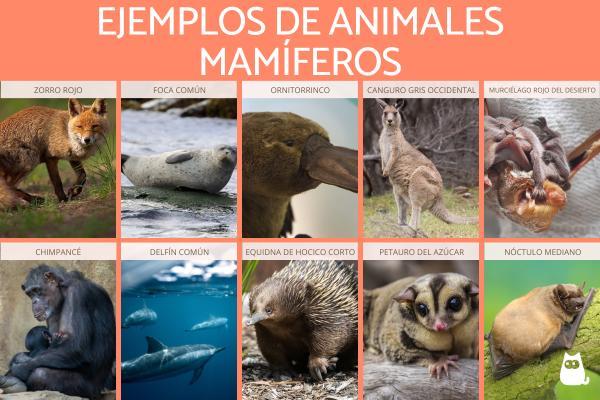
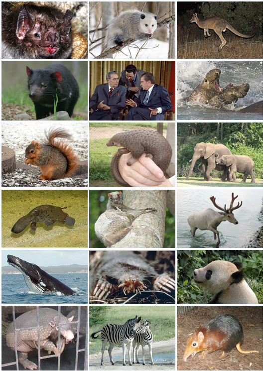

Mamíferos
¿Qué son los mamíferos?
Los mamíferos son animales vertebrados que se caracterizan por tener pelo o pelaje, glándulas mamarias que producen leche para alimentar a sus crías, y son de sangre caliente. En su mayoría, dan a luz a crías vivas (aunque algunos ponen huevos, como los monotremas). También tienen cerebros bien desarrollados. Se dividen en tres grupos principales: placentarios, marsupiales y monotremas. Ejemplos de mamíferos incluyen humanos, perros, gatos, ballenas y murciélagos.
Desarrollo
Fecundación: El espermatozoide fecunda el óvulo, formando el cigoto. Embriogénesis: El cigoto se divide y se forma el embrión, que se desarrolla dentro del útero (en los placentarios) o en una bolsa (en los marsupiales). Desarrollo fetal: El embrión se convierte en feto, crece y sus órganos se desarrollan. Nacimiento: La cría nace y comienza a vivir fuera del cuerpo materno. Lactancia y crecimiento: La madre alimenta a la cría con leche y la cría crece y se desarrolla. Madurez y reproducción: La cría alcanza la madurez sexual y puede reproducirse. Este ciclo garantiza la supervivencia de la especie a través de la reproducción y el cuidado materno.
entorno
Las especies de mamíferos viven en todos los hábitats de la tierra. En el aire, en el agua, en los bosques, en las regiones más frías del mundo y sobre todo en las praderas. En el aire, por ejemplo los murciélagos son uno de los mamíferos más conocidos.
.jpeg)
El Mediterráneo, y España en concreto, cuenta con una amplia diversidad de especies de mamíferos, muchas de ellas únicas y conocidas como el lince ibérico o la foca monje, y otras desconocidas en el resto del mundo, como la musaraña ibérica, el desmán de los Pirineos, que vive en ríos y torrentes de la zona, o la liebre de piornal o de Castroviejo, una especie endémica de Galicia que vive tradicionalmente en las laderas montañosas cubiertas de piornos. Y debemos conservarlas.